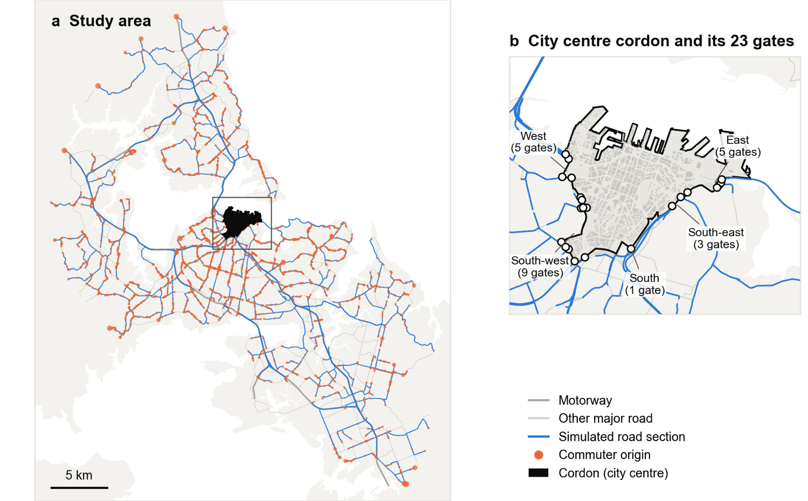
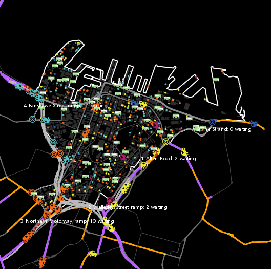

A small city, built one commuter at a time
Here is the model in plain words, piece by piece. Every chart on this page is drawn from the real simulation files, so what you see is what the model did.
The boundary around Auckland's city centre. Cross it by car in the morning and you pay.
One simulated commuter: a home, a job, a car, a personality, and a memory.
A formula that picks the cheapest option, counting time as money.
A large language model (here, Claude): an AI that reads a description and answers in words.
Where it all happens
The destination is Auckland's city centre, the shaded area on the map. The commuters live all over the region. Their homes come from the 2023 Census, which records where people live and where they drive to work. Their routes follow the real major-road network, and each route enters the city centre at one of 23 gates, grouped into five directions of approach.
The roads carry everyone else too: the model adds the real traffic counts of each road, so our commuters are only about 13% of the cars on their routes. Motorways jam the way they really do in the morning, with timings taken from NZTA's counting stations.
| What | Where it comes from |
|---|---|
| Roads and speeds | TomTom's road network |
| Where commuters live | 2023 Census (Stats NZ) |
| Everyday traffic on each road | Auckland Transport and NZTA counts |
| When motorways jam | NZTA counting stations, 36 sites |
| How congested Auckland mornings are | TomTom Traffic Index 2025 |
| How many cars enter the centre | Auckland Transport's charging proposal: 19,000 |

Meet the commuters
Each of the 950 commuters is made of three layers.
Their situation. Where they live, which fixes their route and how long it takes with no traffic. How much they value their time (some people would pay a lot to save ten minutes, others not). What kind of job: office worker who can work from home, office worker who can't, shift worker, tradesperson with a work van, or student. When they have to be at work, whether the bus is realistic, whether they pay for parking, and the most they would ever pay to drive in.
Their personality. Four dials, each from 1 to 5: how strong their habits are, how flexible their schedule is, how open they are to public transport, and how much a new charge annoys them beyond its dollar value.
Their memory. What they did each morning, how long it took, whether they were late, what they paid. The last 95 commuters are twins of the first 95: identical situations, different personalities, so we can see what personality alone changes.
The 950 commuters at a glance
Hover over any bar for the count.
What does each choice cost?Play with it
Every morning a commuter has a menu: drive at their usual time or up to an hour earlier or later, take the bus or train, or work from home if they can. The formula turns each option into a single number in dollars: the time it takes (valued at that person's hourly rate), the pain of arriving early or late, the charge, parking, fuel, how much they dislike the bus, and a “habit cost” for anything that isn't what they did yesterday. Then it picks the cheapest, with a little randomness so people aren't robots.
On a charged morning there is one more rule: if a departure time would cost more than the most this person would ever pay, it is simply removed from the menu.
Cost explorer: the first charged morning
Pick any commuter. Each bar is what one option “costs” them in dollars, all things considered, on morning 6. Drag the slider to change the charge and watch the cheapest option move. Grey bars are options that this person would refuse to pay for at that charge.
The alarm clock in every commuter's head
This is the heart of the model. Each commuter has six alarms. When one rings, they stop and decide. When none rings, they do exactly what they did yesterday, without any decision at all. Each alarm rings only once per event: a new charge makes you think on the day it starts, not every day after.
| Alarm | It rings when… |
|---|---|
| T1 | It's the very first morning and you have no routine yet |
| T2 | The charge starts, or changes |
| T3 | You were late yesterday, by more than you're willing to tolerate (5 to 15 minutes, depending on how flexible you are) |
| T4 | Your bus or train was disrupted yesterday, or a disruption is announced for today (and once more when it's over) |
| T5 | Your drive was more than 20% longer or shorter than you expected, two days running |
| T6 | Your usual choice isn't on the menu today, for instance because the charge at that time is more than you'd pay |
Habit is a cost of change. When the alarm is about a change in your surroundings (T1, T4, T6) that cost is halved: psychologists call this the “habit discontinuity” effect, the moment a routine breaks and people become open to new ones. A price change alone (T2) does not break the habit in the same way.
Who stopped to think, and when
Decisions made each morning in three versions of the experiment. Everyone decides on morning 1. On morning 6 the charge wakes almost everyone. In between, almost nobody. Compare that with the old-fashioned way on the left, where every person decides every single day.
Two kinds of brain
The formula (“the rule”)
Adds up the costs above and picks the cheapest option. It was tuned so that, before the charge, about 85% of commuters drive, and so that the charge cuts car trips by roughly a fifth, which is what happened in Stockholm. It explains itself in a fixed sentence:
The AI (“the LLM”)
Gets a letter, written to “you”: your situation, your personality in four sentences, what you've been doing and how it went, and what has changed. It never sees the formula or any dollar total. It answers with a new routine, a back-up plan for a disrupted morning, and a reason in its own words. Day 1 is set by the formula, so both versions start from identical habits. For example:
The roads, the jams and the gates
A car's morning has three parts. First the drive in: the route is cut into short road sections, and each section slows down as it fills with the day's traffic plus our commuters. Leave at 7:45 and the same road takes longer than at 6:30. Motorways jam the way Auckland's really do, down to 45% of their normal speed for hours.
Then the gate: at the city-centre boundary cars queue, like at a toll booth, and the queue stands in for the city-centre congestion. Finally the last stretch to work, which is short and free-flowing.
The bus or train takes a fixed time: 1.6 times the no-traffic drive plus 10 minutes. Things like choosing a different road, traffic lights and rat-running are deliberately left out, so that any difference between the formula and the AI comes from the decisions, not from the roads.
What the charge is, minute by minute
NZ$4 from 6 am, NZ$6 between 8 and 9, back to NZ$4 after 9:30. Higher “peak” settings scale the whole curve up.
How much slower the drive is, by departure time
Average over all commuters of the extra minutes their route takes compared with empty roads. This is what everyone “knows” on morning 1.

How do we know the numbers are reasonable?
Road congestion was tuned until a typical 8 am drive took 1.71 times as long as an empty-road drive, which is Auckland's score in the TomTom Traffic Index. The gate queues were tuned so that the worst 15 minutes before the charge cost drivers about 15 minutes. Then three dials of the formula were tuned so that, before the charge, 75 to 85% of commuters drive and 8 to 15% take the bus, and so that the charge cuts car trips by 15 to 30%, around Stockholm's 20%. The AI was never tuned: it just answers as it sees fit.
Checks: using 950 commuters instead of all 19,000 changes the results by only 1 to 2%. The rule about the most a person would pay matters most (without it, car trips fall 16%; with a stronger version, 33%). Giving everyone a middle-of-the-road personality makes the formula's reaction stronger (30% instead of 23%).